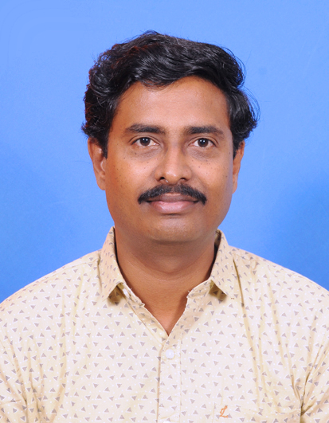
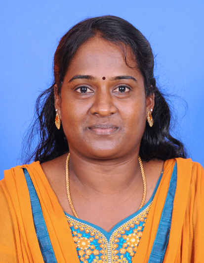
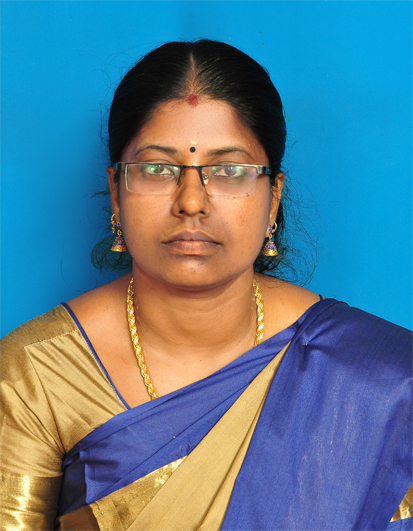
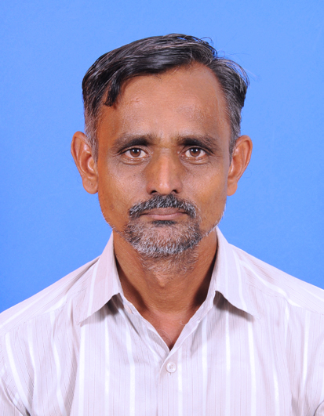

About the Department
The Department of Civil Engineering of Anna University Regional Campus Tirunelveli was established in September 2008. Presently the department has three well established disciplines – Environmental Engineering, Remote Sensing and Structural Engineering and Geoinformatics. These disciplines have fully developed laboratories. This Department has well qualified teachers with good academic and research pursuit.
The main objective of the department is to transfer Remote sensing, Geoinformatics, Environmental Engineering and Structural Engineering to the society and also to undertake research and developmental Projects. The Students of Remote sensing are doing their training and projects in various organizations such as:
- National Remote Sensing Agency, Hyderabad
- Vikram Sarabhai Space Research Organization, Trivandrum
- Institute of Water Studies, Taramani, Chennai
- Indian Institute of Geomagnetism, Tirunelveli
- Centre for Environment and Development, Trivandrum
- National Institute of Atmospheric Sciences, Tirupati
- Indian Institute of Remote Sensing, Dehradun
Courses Offered
The following UG and PG programmes are offered in the Department:
- M.E. Environmental Engineering
- M.Tech. Remote Sensing
- M.E. Structural Engineering
- B.E. Geoinformatics
Faculty Profile
Head of Department

Teaching Staff

Non-Teaching Staff

Mr. B. Ramkumar
Professional Assistant-II

Mrs. S. M. Geetha
Junior Assistant

Mrs. P. Angammal Bharathi
Junior Assistant

Mr. S. Paramasivam
Office Assistant
Geoinformatics and Remote Sensing
"In any new technological endeavor and development, the application aspects always take time to catch up"
The Anna University has started a regular four year B.E programme in Geoinformatics as a part of Department of Civil Engineering amply supported by Institute of Remote Sensing perhaps following Germany's example started the geomatics course and first batch students graduated in April 1996 and Post graduate degree programme (M.Tech) in Remote Sensing was upgraded from post graduate diploma programme started in 1985.
Due to the demands on the space technologies quite high and drawback in a number of institutions and Universities, Anna University Tirunelveli has started Post graduate on Remote sensing in the Year 2008 and later 2011, Undergraduate programme was started in the Year 2011 with the adequate infrastructure facilities in this campus.
This is the only University to have introduced a four year geoinformatics programme leading to B.E degree. However, the number of students likely to pass out every year is grossly inadequate to meet the professional needs of our country. Many industries as well as earth resources managers will need qualified personnel with advanced knowledge in surveying and mapping.
The subjects cover specifically in undergraduate and post graduate level specifically on the principles of remote sensing, photogrammetry, cartography, microwave remote sensing, geodesy, engineering survey, digital image processing, computer applications, geoinformation systems, cadastral surveys, management practices and some special electives and all aspects of geotechnology are generally covered in these courses.
Space technology offers data and Remote sensing act as a tool to provide up-to-date information on natural and environmental resources. From the inception of these programmes, nearly 10 years have crossed the milestones of higher education on Undergraduate and post graduate programme with good academic and placement record with the ample support of Anna University Chennai.
Sky is the Limit
Consultancy Projects
The department has undertaken various consultancy projects. For detailed information, please download the consultancy document.
Gallery